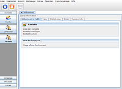
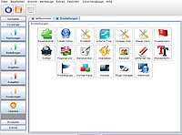

Yabs
Dieser Artikel wurde für die folgenden Ubuntu-Versionen getestet:
Ubuntu 16.04 Xenial Xerus
Ubuntu 14.04 Trusty Tahr
Zum Verständnis dieses Artikels sind folgende Seiten hilfreich:
YaBS  (Yet another Business Software) ist eine skalierbare Rechnungs- und Buchhaltungssoftware, die sich an Kleinunternehmen richtet. Die Entwicklung in Java ermöglicht einen plattformunabhängigen Einsatz unter Windows, Mac OS X und Linux gleichzeitig. Die Funktionen vom YaBS können jederzeit über Plugins erweitert werden. Zur Dokumentenerstellung wird ab Version 1.2.6-beta1 kein Apache OpenOffice mehr benötigt. Ein direkter Export in eine PDF-Datei sowie ein direkter Mailversand sind ebenfalls möglich.
(Yet another Business Software) ist eine skalierbare Rechnungs- und Buchhaltungssoftware, die sich an Kleinunternehmen richtet. Die Entwicklung in Java ermöglicht einen plattformunabhängigen Einsatz unter Windows, Mac OS X und Linux gleichzeitig. Die Funktionen vom YaBS können jederzeit über Plugins erweitert werden. Zur Dokumentenerstellung wird ab Version 1.2.6-beta1 kein Apache OpenOffice mehr benötigt. Ein direkter Export in eine PDF-Datei sowie ein direkter Mailversand sind ebenfalls möglich.
Neben der Kunden-, Artikel- und Herstellerverwaltung sowie dem Rechnungs- und Mahnwesen bietet YaBS eine Einnahme- / Überschussrechnung, die Möglichkeit der einfachen Rechnung ohne Mehrwertsteuer nach §19 UStG. Das Installationsprogramm ist in Englisch, das deutsche Sprachpaket wird auf Wunsch installiert.
Wer eine Bilanzbuchhaltungssoftware sucht, ist mit dem Projekt Tryton besser bedient.
Voraussetzungen¶
YaBS basiert auf Java. Wie man eine Laufzeitumgebung (JRE, ab Version 6) installiert, ist im Artikel Java/Installation beschrieben.
Installation¶
Über https://github.com/anti43/openyabs/releases  wird eine Archivdatei und ein .deb-Paket angeboten. Das Archiv herunterladen und nach /opt entpacken [1]. Um beim Programmstart etwas Tipparbeit zu sparen, benennt man den entstandenen Ordner in yabs um. Im weiteren Verlauf des Artikels wird vom Speicherort /opt/yabs/ ausgegangen.
wird eine Archivdatei und ein .deb-Paket angeboten. Das Archiv herunterladen und nach /opt entpacken [1]. Um beim Programmstart etwas Tipparbeit zu sparen, benennt man den entstandenen Ordner in yabs um. Im weiteren Verlauf des Artikels wird vom Speicherort /opt/yabs/ ausgegangen.
Einrichtung¶
 Die anschließende Einrichtung ist für alle Versionen gleich, unabhängig von der Art der Installation. Zur Einrichtung von YaBS liegt dem Paket die Datei install.sh bei, die einmalig mit Root-Rechten gestartet werden muss [2][3]:
cd /opt/yabs sudo ./install.sh
Während der Einrichtung wird nun die Datenbankanbindung abgefragt. Standardmäßig wird die mitgelieferte Derby Datenbank verwendet. Bei der Nutzung als Client / Server Lösung ist jedoch die Verwendung einer anderen Datenbank (z.B. MySQL) empfehlenswert. Des Weiteren wird der erste Benutzer (admin) angelegt, so dass YaBS direkt verwendet werden kann (das Passwort ist 'password').
Derby-Datenbank¶
Während der Installation wird die Derby-Datenbank sowie deren Struktur von der Routine angelegt und eingerichtet.
MySQL Datenbank¶
Während der Installation wird die Mysql-Datenbank sowie deren Struktur von der Routine angelegt und eingerichtet.
Starten¶
 Nach der Installation und Einrichtung kann YaBS aus dem Terminal heraus mit folgenden Befehlen gestartet werden:
/opt/yabs/yabs.sh
Wenn dabei Probleme auftreten, kann man es auch mit
java -jar /opt/yabs/yabs.jar -debug -consolelog
versuchen.
Erste Schritte¶
YaBS startet standardmäßig mit dem Benutzer admin, der bei der Installation angelegt wird (initiales Passwort: 'password'). Als erstes sollte man unter "Werkzeuge -> Benutzer" das Passwort dieses Benutzers ändern und über die Schaltfläche "Sichern" abspeichern. Nun muss man noch einen Standardbenutzer anlegen und diesen über das Schloss-Symbol, oben links, anmelden.
Nächster Schritt sollte die Einrichtung mittels Einrichtungsassistenten sein ("Extras -> Installation Wizard").
Aktuelle Dokumentation¶
Auf google.com  ist die ständig aktuell gehaltene Doku zu finden
ist die ständig aktuell gehaltene Doku zu finden
Links¶
http://www.linux-community.de/Internal/Artikel/Print-Artikel/LinuxUser/2008/11/Kassenklingeln
- Artikel zur Vorgängerversion mp-Kundenverwaltung, LinuxUser 11/2008
- Erstellt mit Inyoka
-
 2004 – 2017 ubuntuusers.de • Einige Rechte vorbehalten
2004 – 2017 ubuntuusers.de • Einige Rechte vorbehalten
Lizenz • Kontakt • Datenschutz • Impressum • Serverstatus -
Serverhousing gespendet von